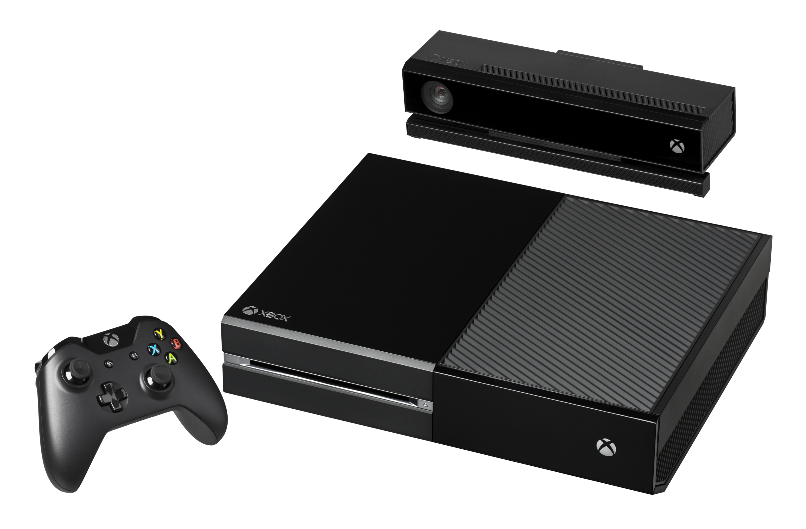

역사
1972년 첫 상업 유닛인 마그나복스 오디세이 이후로 수많은 가정용 비디오 게임 콘솔이 존재해 왔습니다. 역사적으로 이러한 콘솔은 공통 기술 사양에 따라 각각 약 6년간 지속되는 세대로 분류되어 왔습니다. 2021년 기준으로, 9개의 콘솔 세대가 있으며, 현재 주요 제조사는 소니, 마이크로소프트, 닌텐도입니다. 과거의 콘솔 제조사는 아타리, 페어차일드, 인텔리비전 엔터테인먼트, 콜레코, 세가, NEC, 3DO, SNK입니다.
비디오 게임 콘솔(video game console)은 TV나 모니터와 같은 디스플레이 장치의 컴포지트 비디오, 고선명 멀티미디어 인터페이스 등의 영상 디스플레이 신호를 이용하여 1인 이상이 게임을 플레이할 수 있는 컴퓨터 장치(computer device)를 말한다. 소비자들이 혼자서 비디오 게임을 즐길 수 있는 개인용 컴퓨터는 여러 기능을 함께 다루고 있으므로 게임기라고 부르지 않는다.
1972년 첫 상업 유닛인 마그나복스 오디세이 이후로 수많은 가정용 비디오 게임 콘솔이 존재해 왔습니다. 역사적으로 이러한 콘솔은 공통 기술 사양에 따라 각각 약 6년간 지속되는 세대로 분류되어 왔습니다. 2021년 기준으로, 9개의 콘솔 세대가 있으며, 현재 주요 제조사는 소니, 마이크로소프트, 닌텐도입니다. 과거의 콘솔 제조사는 아타리, 페어차일드, 인텔리비전 엔터테인먼트, 콜레코, 세가, NEC, 3DO, SNK입니다.
소니가 1999년에 처음으로 플레이스테이션2를 발표했을 때, 소니는 이 콘솔을 가정용 엔터테인먼트의 중심으로 자리매김했습니다. 비디오 게임을 할 수 있을 뿐만 아니라 오디오 CD와 비디오 DVD도 재생할 수 있었기 때문입니다. Windows 운영 체제, 소프트웨어, 게임을 통해 주로 개인용 컴퓨터(PC) 사업을 지원하는 사업을 해 온 마이크로소프트는 플레이스테이션2를 개인용 컴퓨터에 대한 위협으로 보았습니다. 마이크로소프트 DirectX 팀의 엔지니어 4명(Kevin Bachus, Seamus Blackley , Ted Hase, DirectX 팀 리더 Otto Berkes)은 PC와 공통된 많은 하드웨어 구성 요소를 사용하여 콘솔에서 게임을 구동하기 위해 Windows와 DirectX 버전을 효과적으로 실행하는 시스템을 설계했습니다. 이 접근 방식을 사용하면 Windows 개발자가 새 시스템용 게임을 쉽게 빌드하여 대부분 콘솔의 사용자 지정 하드웨어 솔루션과 차별화할 수 있습니다.
1991년까지 소니는 비디오 게임 산업과 직접적으로 관련이 거의 없었습니다. 이 회사는 닌텐도 의 슈퍼 패미컴 용 사운드 칩과 같은 다른 콘솔용 구성 요소를 공급했고 비디오 게임 스튜디오인 소니 이미지소프트를 운영했습니다. 1988년 초에 시작된 닌텐도와 소니의 합작 프로젝트의 일환으로 두 회사는 슈퍼 패미컴의 CD-ROM 버전을 만들기 위해 노력했습니다. 1991년 6월 가전제품박람회 에서 소니는 그린북 기술 또는 CD-i 를 통합한 CD-ROM 드라이브가 내장된 슈퍼 패미컴인 플레이스테이션을 공개했습니다. 그러나 가전제품박람회에서 발표한 지 하루 만에 닌텐도는 닌텐도는 두 회사 간 수익 분배에 대한 합의에 이르지 못하자 거래를 파기했습니다. 그렇게 협력 관계가 무산되면서 소니는 독자적으로 콘솔을 개발하게 되었고, 결과적으로 1994년에 첫 번째 플레이스테이션을 출시하며 브랜드가 시작되었습니다.
 |
 |
 |
 |